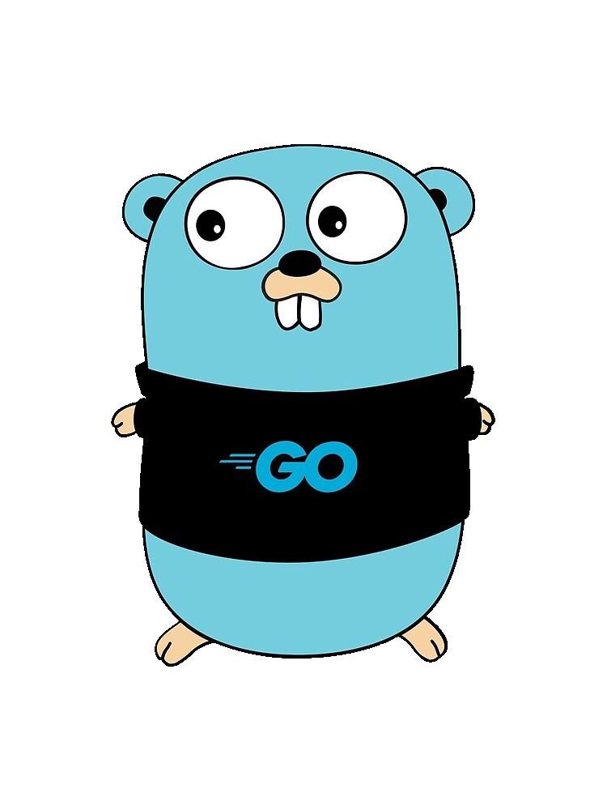
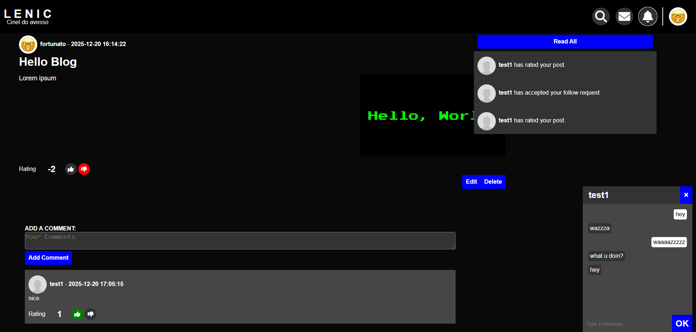

Pedro Fortunato
Backend Developer
I developed a social network and deployed it on AWS. Checkout Lenic
I'm a backend developer focused on building clean, scalable systems and streamlining development workflows. My core expertise is in Go, with hands-on experience designing REST APIs, WebSocket-based real-time systems, gRPC services, and event-driven architectures built to handle high-concurrency workloads.
Recently, I deployed an application to AWS using Terraform, deepening my practical experience with cloud infrastructure, containerization, and production operations. I'm currently focused on microservices architecture patterns and designing complex backend systems, with a strong interest in roles where backend engineering intersects with infrastructure, automation, and developer experience, areas where thoughtful system design can meaningfully improve reliability and team velocity.

Projects
Lenic
Social networking platform developed as an end-to-end backend system, supporting HTTP and WebSocket-based real-time features. The project evolved into a modular architecture including a dedicated mailing microservice, and a gRPC API. The backend was recently reworked with a strong focus on architecture and production readiness, and the infrastructure is provisioned using Terraform. The system is currently deployed and running on AWS.



Hexagonal Order Service Work in progress
Two sister services, developed in a hexagonal architecture. The first service, order_api, exposes a REST API and communicates with the second service order_svc using Kafka for write operations and gRPC for read operations, bbeing CQRS compliant, ultimately accessing DB. The service currently has traceability correctly instrumented and propagated through service boundaries by way of Kafka headers and gRPC interceptors. Request, trace and span IDs also correctly captured in logs exported to Loki.
Task Management API
Task management REST API with Role-Based Access Control (RBAC), designed with clean architecture and production concerns in mind. Features database migrations, containerized dependencies, and a comprehensive testing strategy using testcontainers for PostgreSQL and NATS, along with full integration test coverage for all API endpoints.
Trading Chart aggregator
A small data pipeline. It connects to the Binance API via WebSocket to gather real-time tick data for multiple coins, aggregates OHLC candlesticks for each, and streams the aggregated data through gRPC server every tick. Completed candlesticks are persisted to DB. The project includes unit tests for the aggregator and is fully containerized with Docker for easy deployment and testing.
Double or Nothing Dice
A small double or nothing game. The game features real-time gameplay via WebSockets and a REST API for user management, including JWT authentication and email verification. Redis is used to persist the current game state, while PostgreSQL handles user data and stores the game upon finishing. Containerized with Docker for straightforward deployment. Players can register and authenticate through email verification, amd play the game, place bets, and manage their balance through Postman.